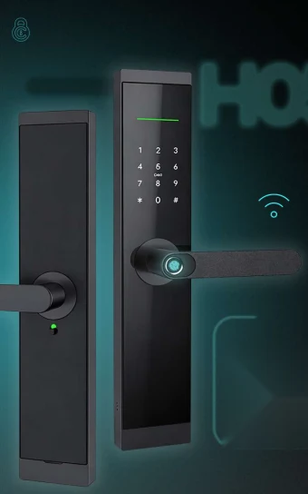
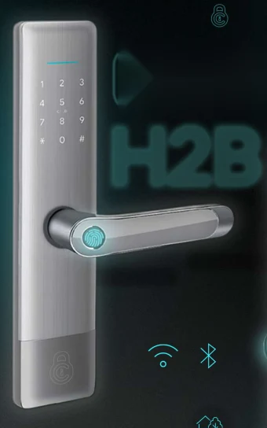
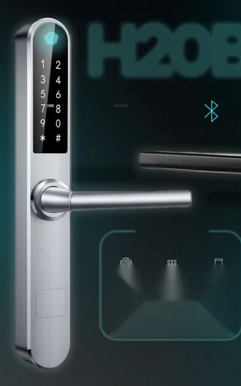
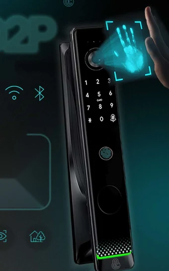
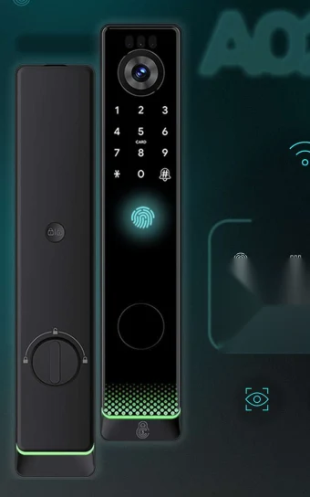
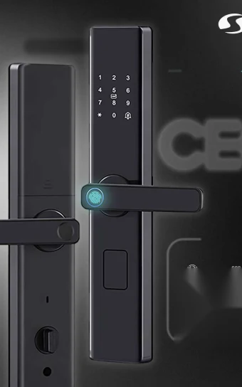
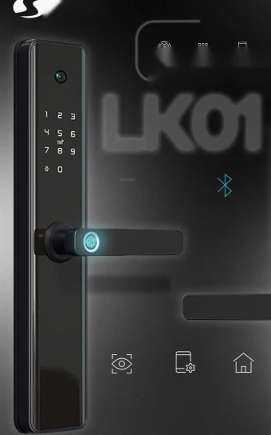
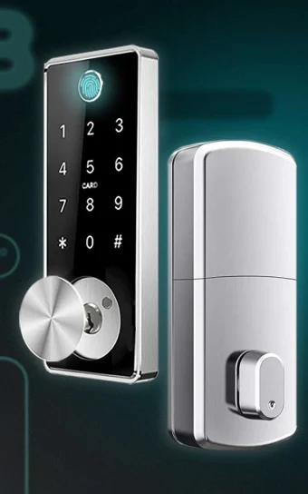

![Shaip Domótica]()
![]()
Abrís sin buscar la llave
Huella, código, tarjeta o el celular, según el modelo. Llegás con las bolsas en la mano y la puerta se abre igual.
Catálogo de cerraduras inteligentes
Huella, código, tarjeta, cámara y control desde la app. Ocho modelos de Microfast para madera, chapa, PVC y aluminio, con la instalación y la configuración resueltas por Shaip.
Por qué vale la pena
Una cerradura inteligente resuelve algo muy concreto: que entrar a tu casa no dependa de una llave que se pierde, se copia o se queda adentro.
Huella, código, tarjeta o el celular, según el modelo. Llegás con las bolsas en la mano y la puerta se abre igual.
Las cerraduras se gestionan por Bluetooth con la app de control. Con el gateway sumás WiFi y las manejás desde cualquier lugar.
Cuatro pilas AA o AAA, o batería recargable en los modelos A02P y A02B. No hay que llevar cable hasta la puerta.
La mayoría reemplaza la cerradura existente. La T11B se monta directamente sobre la superficie, sin mortaja ni embutido.
La H20B tiene resistencia al agua IP64 y la H2B también declara resistencia al agua: son las preparadas para la intemperie. La H05B, la CE02, la LK01 y la T11B son de uso interior.
Madera, chapa, PVC, perfil de aluminio, MDF y puertas metálicas, con espesores de 35 a 77 mm según el modelo.
Los ocho modelos
Todos comparten la misma idea: abrir sin llave y administrar los accesos desde el celular. Cambian el material, el tipo de puerta, la alimentación y las funciones extra.

La más equilibrada de la línea: cuerpo de aleación de aluminio, Bluetooth y WiFi integrados y uso interior.

Acero inoxidable 301 combinado con aleación de aluminio: la opción más robusta para puertas de paso intenso.

La más preparada para la intemperie y la única que llega hasta los 77 mm de espesor y al perfil de aluminio.

La más completa: biometría de palma, cámara integrada y función timbre, con batería recargable.

Cámara integrada y timbre con cámara por app: ves quién está del otro lado antes de abrir.

Pensada para puertas internas: aleación de aluminio, Bluetooth y WiFi, y control desde la app.

Cerradura y portero en un mismo equipo: cámara integrada con pantalla y app de control, para uso interior.

La solución cuando no se puede tocar la puerta: se atornilla sobre la superficie, en formato pasador o cerrojo.
Comparativa
Las especificaciones son las que declara el fabricante en el catálogo. Si tu puerta no entra en ninguna fila, escribinos igual: hay casos que se resuelven con adaptaciones.
| Modelo | Conexión | Alimentación | Puertas | Espesor | Uso | Extra |
|---|---|---|---|---|---|---|
| H05B | Bluetooth + WiFi | 4 × AA | Madera, chapa | 35–65 mm | Interior | — |
| H2B | Bluetooth + WiFi | 4 × AA | Madera, chapa | 35–65 mm | Interior / exterior | — |
| H20B | Bluetooth | 4 × AAA | Madera, chapa, PVC, aluminio | 35–77 mm | Interior / exterior | IP64 |
| A02P | Bluetooth + WiFi | Recargable | Chapa, madera | 35–60 mm | Interior / exterior | Palma, cámara, timbre |
| A02B | Bluetooth + WiFi | Recargable | Chapa, madera | 35–60 mm | Interior / exterior | Cámara, timbre por app |
| CE02 | Bluetooth + WiFi | 4 × AA | Madera, chapa | 35–65 mm | Interior | App de control |
| LK01 | Bluetooth | 4 × AA | Madera, chapa | 35–65 mm | Interior | Portero con cámara y pantalla |
| T11B | Bluetooth | 4 × AA | Madera, MDF, metálicas | 35–54 mm | Interior | Sin mortaja, pasador o cerrojo |
Dónde la podés usar
Antes de elegir el modelo, pensá en la puerta, en quién la usa y en si está bajo techo o a la intemperie. Con esas tres respuestas el modelo sale solo.
El caso más común. Si la puerta da al exterior, H2B o H20B; si es una puerta interior, la H05B alcanza de sobra.
Puertas de chapa o madera de 35 a 65 mm, con la app como único control y sin llaves encima.
Con el gateway gestionás el acceso a distancia y no dependés de entregar una llave en mano.
La LK01 suma cámara y pantalla para ver quién llega; la CE02 resuelve el acceso del personal.
Dormitorio, consultorio o depósito: la CE02 y la T11B están pensadas para uso interior.
La T11B se atornilla sobre la superficie de la puerta: sin mortaja, sin embutido y sin obra.
Control remoto
Es un conversor de señales Bluetooth a WiFi. Conectado a la cerradura, te permite gestionarla y controlarla remotamente desde cualquier parte del mundo, desbloqueando las funciones remotas de la app.
Preguntas frecuentes
Depende del material y del espesor. Los modelos del catálogo cubren de 35 a 77 mm según el modelo, y hay opciones para madera, chapa, PVC, perfil de aluminio, MDF y puertas metálicas. Mandanos una foto de la puerta y el espesor y te decimos qué modelo corresponde.
No. La mayoría de los modelos reemplaza la cerradura que ya tenés sobre la mortaja existente. La T11B se instala directamente sobre la superficie de la puerta, sin mortaja ni embutido.
No. Las cerraduras se manejan por Bluetooth con la app desde el celular. El WiFi solo hace falta si querés controlarlas a distancia, y para eso se agrega el gateway.
La mayoría usa cuatro pilas AA o AAA; la A02P y la A02B usan batería recargable. La T11B declara entre 6 y 12 meses de autonomía. La duración real depende de cuánto se use la puerta por día.
Sí: para eso están la H2B y la H20B, que tiene resistencia al agua IP64. La H05B, la CE02, la LK01 y la T11B son de uso interior.
Las cerraduras se gestionan con la app de control (TTLock). La configuración inicial la hacemos junto con la instalación, así que no tenés que pelear con los ajustes.
Con una foto, el material y el espesor te decimos qué modelo conviene y cómo queda instalado.
Córdoba y La Rioja · Lun a Vie de 10:00 a 20:00 · WhatsApp +54 351 549 5495
Especificaciones según catálogo del fabricante. Precios y disponibilidad, por consulta.